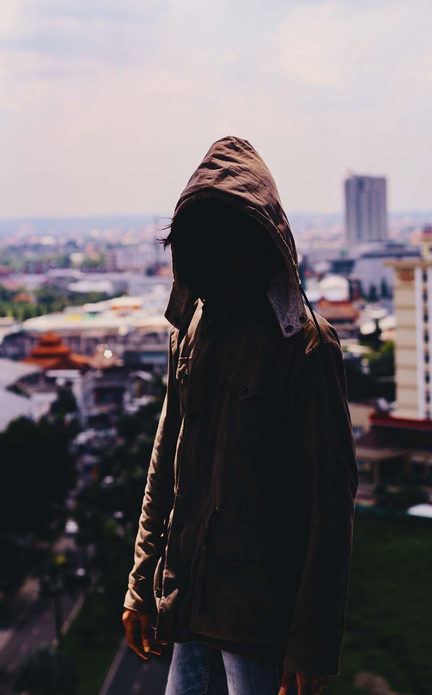
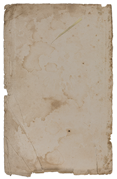
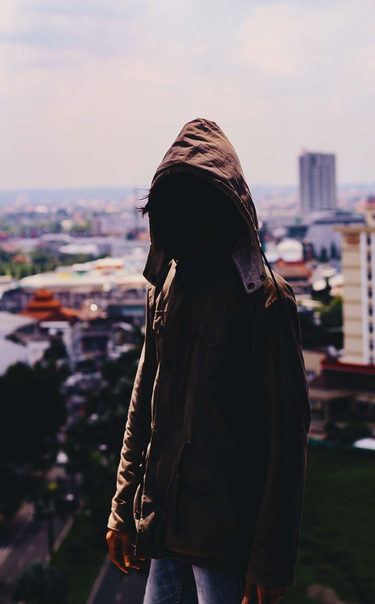
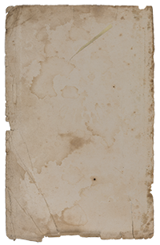
 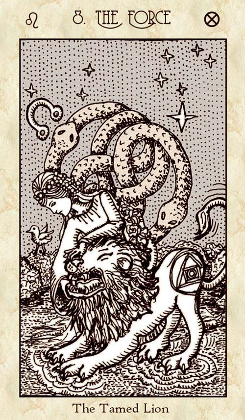
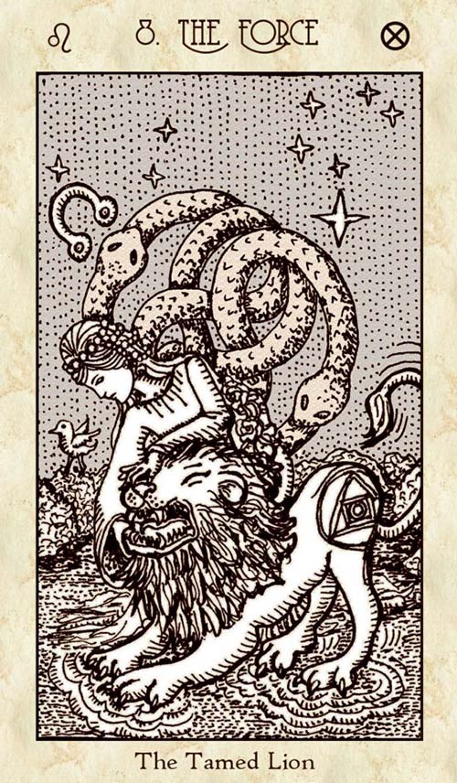
 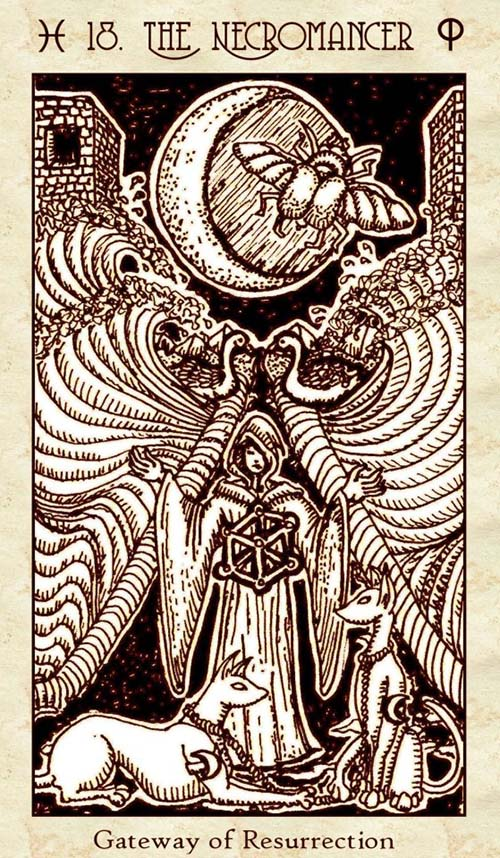
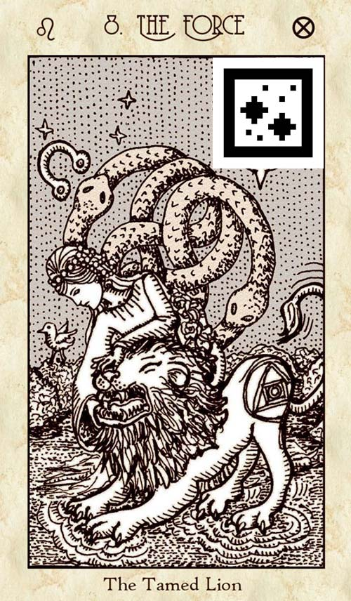
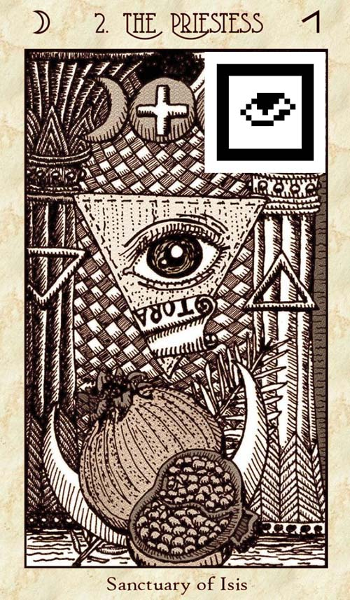
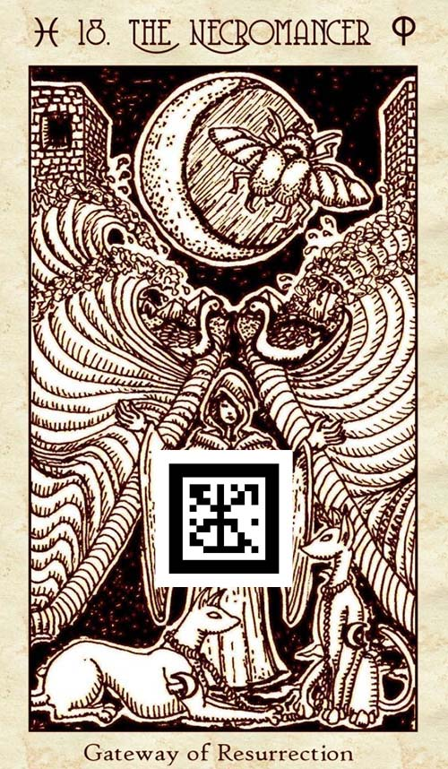
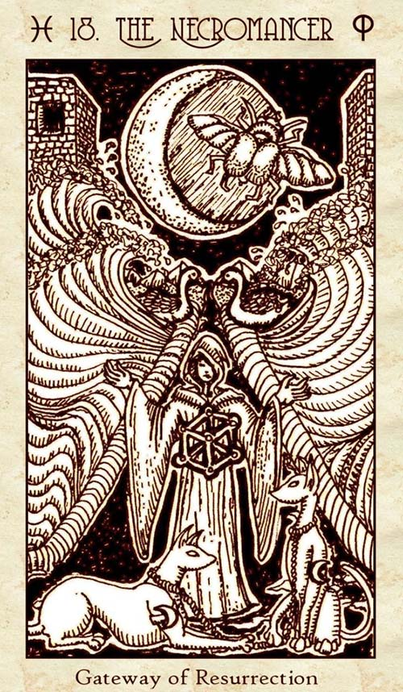
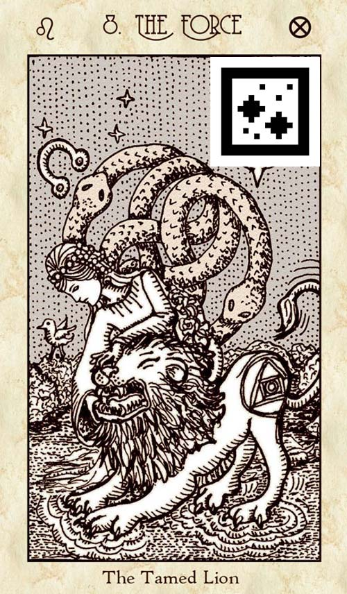
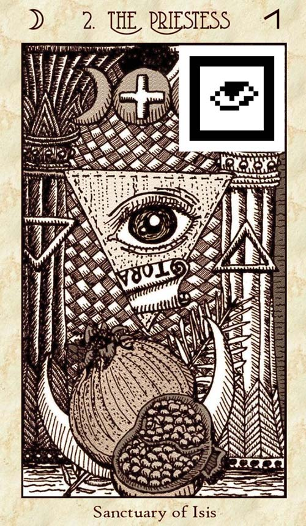
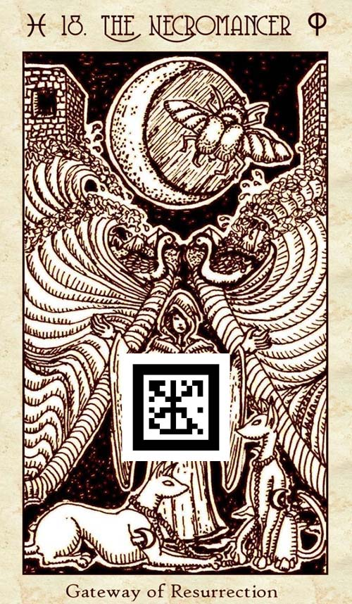
 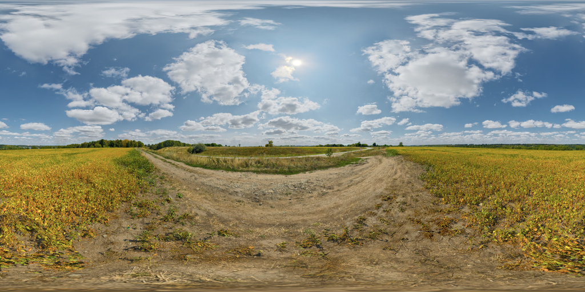
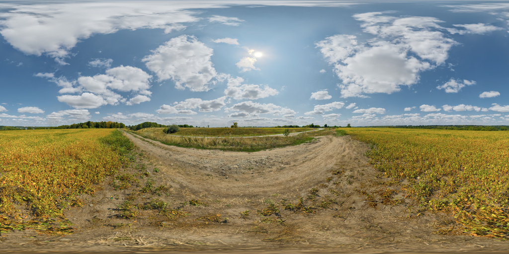
Here you will reach a new level of insight in to the mysteries of life
and elevate your soul to a higher state of being!
This is not an offer, it's a demand. You are not free to leave until you
face The Truth – or deposit 1.000.000 bitcoins/gold coins to this
account: 7263849-9264195.
Follow the light to enlightenment!
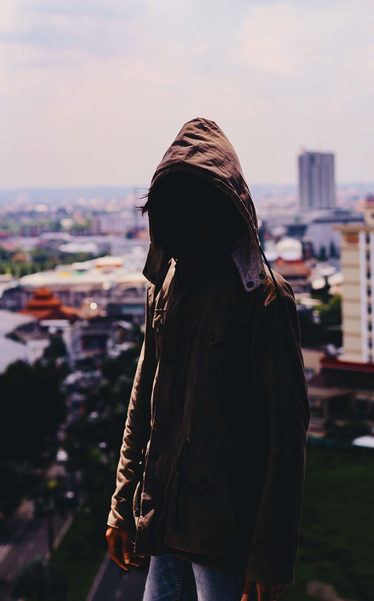
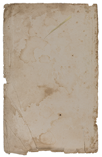
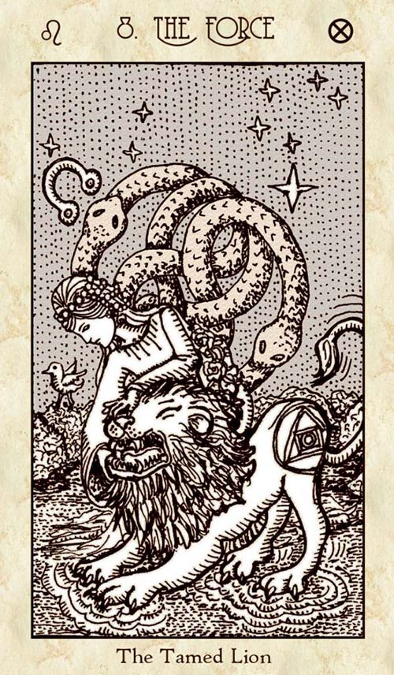
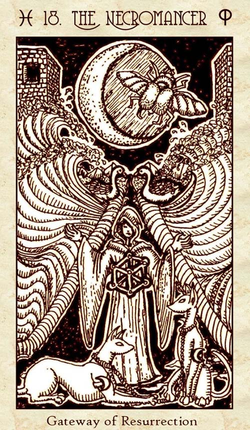
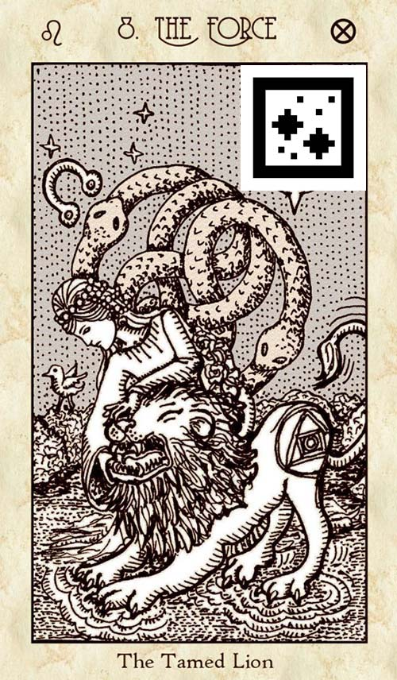
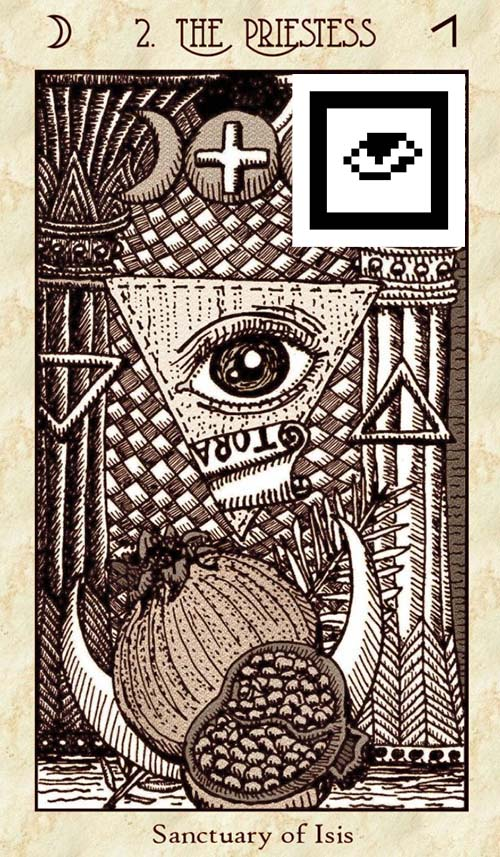
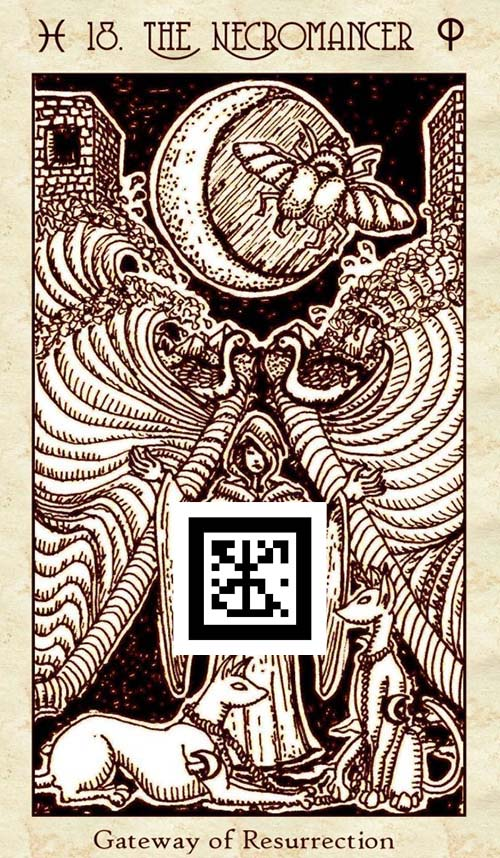
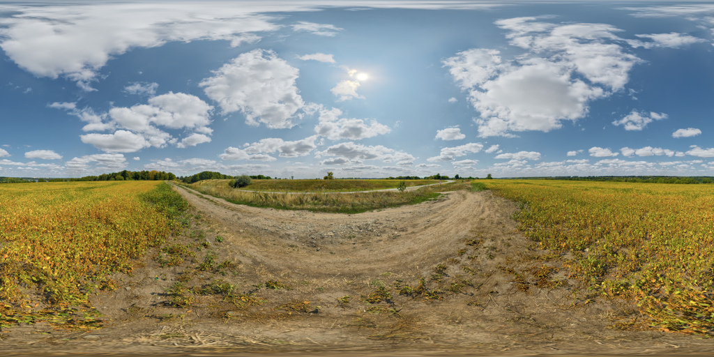